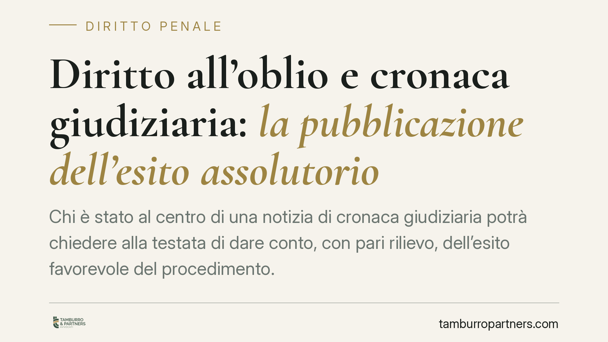

Diritto all'oblio e cronaca giudiziaria: la pubblicazione dell'esito assolutorio
Chi è stato al centro di una notizia di cronaca giudiziaria potrà chiedere alla testata di dare conto, con pari rilievo, dell'esito favorevole del procedimento. La novità incide sul Codice privacy e rafforza il principio di esattezza dei dati. Vediamo gli estremi normativi, cosa cambia in concreto e come attivare la tutela davanti al Garante.

Il quadro normativo: una verifica necessaria
Prima di tutto una precisazione doverosa, perché su un tema così circolato si sono accumulate attribuzioni imprecise.
La cosiddetta "legge Costa" più nota è la Legge 5 agosto 2024, n. 114, che ha modificato l'art. 114 del codice di procedura penale introducendo il divieto di pubblicazione integrale dell'ordinanza di custodia cautelare fino alla conclusione delle indagini preliminari. Quel provvedimento non disciplina l'obbligo di pubblicare l'esito assolutorio.
L'obbligo di dare conto di assoluzioni, proscioglimenti, non luogo a procedere e archiviazioni discende da un distinto intervento di modifica del D.lgs. 196/2003 (Codice privacy), nell'ambito delle regole sul trattamento dei dati per finalità giornalistiche. Al momento della redazione gli estremi definitivi del testo pubblicato in Gazzetta Ufficiale vanno verificati puntualmente: indichiamo come consolidato il principio, non il numero di legge, che va controllato sulla fonte ufficiale prima di ogni atto difensivo. Su un tema così, pubblicare un riferimento non certo sarebbe un errore.
Il fondamento sovranazionale è invece solido: l'art. 5, par. 1, lett. d) del Reg. UE 2016/679 (GDPR) impone il principio di esattezza dei dati personali, che devono essere aggiornati. Una notizia che racconta un'indagine ma non il suo esito liberatorio restituisce, col tempo, un'informazione inesatta.
Le categorie processuali: distinguere con precisione
Il testo giornalistico tende a trattare come sinonimi termini che in diritto processuale penale non lo sono.
- Il proscioglimento è la categoria più ampia (il *genus*): ricomprende sia la sentenza di non doversi procedere sia, secondo l'impostazione tradizionale, le pronunce liberatorie nel merito.
- L'assoluzione (art. 530 c.p.p.) è la sentenza dibattimentale che accerta l'insussistenza del fatto, la mancata commissione, la non rilevanza penale o l'insufficienza della prova.
- La sentenza di non luogo a procedere (art. 425 c.p.p.) chiude l'udienza preliminare.
- L'archiviazione (artt. 408 ss. c.p.p.) interviene nella fase delle indagini, quando non si procede nemmeno all'esercizio dell'azione penale.
Sono esiti diversi per fase e natura, ma accomunati da un dato: segnano la fine favorevole o la non prosecuzione del procedimento raccontato.
Cosa cambia per l'interessato
Chi è stato nominato in un articolo di cronaca relativo a un procedimento penale può chiedere alla testata di pubblicare la notizia dell'esito favorevole con rilievo adeguato rispetto a quello dato alla notizia originaria.
Il punto di forza è la leva procedurale. In caso di inerzia della testata, l'interessato non è costretto a instaurare subito un contenzioso civile: può rivolgersi al Garante per la protezione dei dati personali attraverso il reclamo ex art. 143 del Codice privacy. Il Garante può ordinare la pubblicazione. È una via tendenzialmente più rapida ed economica del giudizio ordinario.
Resta ferma, in parallelo, la possibilità di agire per l'aggiornamento o la cancellazione dei dati (diritto all'oblio) e per il risarcimento, nei casi che lo giustifichino.
Cosa fare in concreto
- Raccogliere la documentazione. Reperire la copia dell'articolo originario (URL, data, testata) e il provvedimento che attesta l'esito favorevole (sentenza, decreto di archiviazione).
- Inviare una richiesta formale alla testata. Indicare l'esito, allegare il titolo giudiziario e domandare la pubblicazione con rilievo proporzionato a quello iniziale.
- Fissare un termine e conservare la prova. Trasmettere la richiesta con mezzo tracciabile (PEC) e attendere il riscontro.
- Attivare il reclamo al Garante. In assenza di risposta adeguata, presentare reclamo ai sensi dell'art. 143 del Codice privacy, chiedendo l'ordine di pubblicazione.
- Valutare le azioni ulteriori. Verificare l'opportunità di agire per l'aggiornamento dei dati e, nei casi di danno, per il risarcimento.
Data la delicatezza del coordinamento tra disciplina penale, normativa privacy e diritto di cronaca, è opportuno il supporto di un professionista nella predisposizione sia della richiesta sia dell'eventuale reclamo.
Contributo informativo a cura di Tamburro & Partners - Avv. Giuseppe Tamburro. Non costituisce parere legale.
Ogni condominio ha una storia a sé.
Se gestisci un'amministrazione e vuoi un confronto su una specifica questione condominiale, scrivi allo studio. Ti rispondiamo entro un giorno lavorativo.